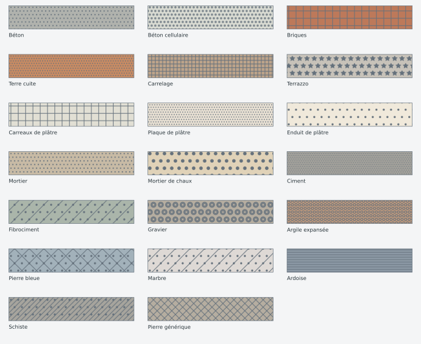
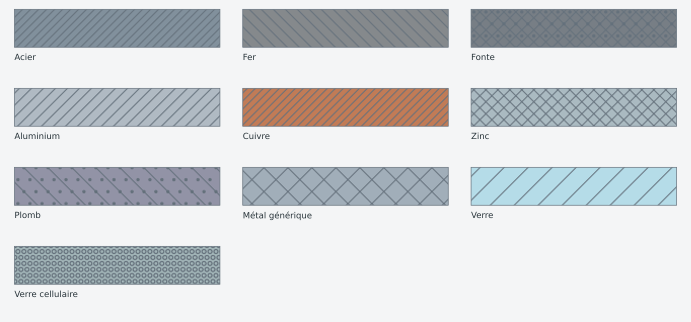
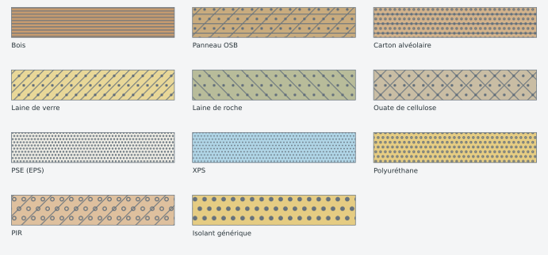
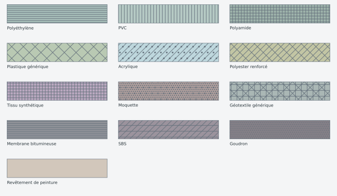
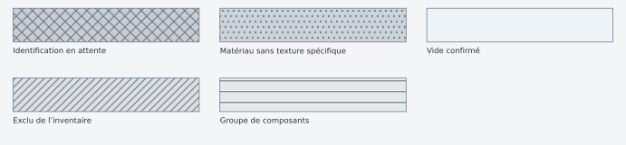

Explorateur privé DECUB
L'explorateur permet de consulter le catalogue, l'inventaire physique et la provenance dans PostgreSQL à travers une interface Streamlit locale. Il ne modifie pas les données et ne calcule pas les intensités. La documentation publique ne contient que des exemples synthétiques.
Le symbole DECUB accompagne le titre d’Accueil ; la barre latérale est réservée à la navigation et aux commandes. Le favicon reste présent dans toutes les sections.
Installation et exécution
Depuis la racine du dépôt, avec l'environnement virtuel activé :
python -m pip install -e ".[visualization]"
python -m streamlit run src/decub/visualization/explorer.py --server.address 127.0.0.1 --server.port 8501 --browser.gatherUsageStats false
Ouvrir http://127.0.0.1:8501. Une configuration PostgreSQL locale et un accès autorisé sont nécessaires. Arrêter avec Ctrl+C. Ne pas exposer le port à d'autres réseaux ni déployer sur des services publics. Privilégier un rôle PostgreSQL limité à SELECT ; l'application ouvre des transactions en lecture seule, qui ne remplacent pas les contrôles d'autorisation du serveur. L'authentification multi-utilisateur n'est pas implémentée. Ne pas publier de captures, de valeurs ou de téléchargements de données réelles.
Navigation
| Section | Consultations |
|---|---|
| Accueil | Nombre d'entités, y compris les versions historiques |
| Visualiseur constructif | Fiches de groupes, dessins texturés, fenêtres schématiques et diagnostic du modèle |
| Explorateur de bâtiments | Sélection territoriale et du modèle, ventilations, fiches et schémas proportionnels |
| Matériaux | Identités, propriétés, alias et classifications |
| Classifications | Systèmes, versions, nœuds et références parentes |
| Bâtiments et modèles | Zones d'étude, îlots, bâtiments, modèles et mesures |
| Éléments | Identifiants, mesures, sous-types et associations |
| Compositions | Versions, parties et mesures agrégées |
| Sources | Références, fichiers et emplacements des enregistrements |
| Importations | Adaptateur, état, dates et statistiques |
| Qualité | Masse volumique scalaire absente, éléments opaques non associés et mesures de parties sans valeur |
| Couverture linguistique | Couverture des libellés par entité et langue |
Dans les sections tabulaires, sélectionner une entité, filtrer par identifiant, rechercher du texte littéral et paginer (100 lignes au maximum par page). Sélectionner un enregistrement pour consulter ses relations directes (100 enregistrements au maximum par relation) ; pour poursuivre, utiliser les identifiants de clés étrangères dans les entités correspondantes. Les parties d'une version de composition peuvent être consultées par son identifiant, en conservant position et parent. Aucune version scientifique effective n'est sélectionnée automatiquement. Les comptages de qualité incluent les versions historiques ; ils ne représentent ni la couverture massique ni la validation scientifique. Les valeurs nulles ne sont pas converties en zéros. Les décimales sont affichées sous forme de texte pour conserver la précision.
flowchart LR
A[Streamlit local] --> B[Requêtes SQLAlchemy bornées]
B --> C[(PostgreSQL : transaction en lecture seule)]
C --> ALes requêtes disposent d'un délai d'exécution maximal et d'une pagination. Les contenus bruts d'origine, la configuration d'importation et les chemins de stockage sont omis ; les identifiants permettent de suivre la provenance. Il n'existe pas de cache persistant des données. L'interface ne comporte pas d'exportateur ; le navigateur peut permettre de copier les données visibles. L'explorateur et les tables partagent les mêmes données et transactions en lecture seule. Le visualiseur 3D, les coupes physiques certifiées et les graphiques de masses et d'intensités restent à développer.
Explorateur de bâtiments et visualisations
Dans la barre latérale, sélectionner Navegador de edificios (explorateur de bâtiments). Choisir une zone d'étude, un îlot, un bâtiment et une version du modèle ; chaque sélecteur permet la recherche et la pagination. Les vues portent exclusivement sur la version sélectionnée, et non sur la somme des modèles historiques.
| Vue | Visualisation et navigation |
|---|---|
| Ventilation | Nombre, surface enregistrée et couverture par nature d'élément, type d'origine, catégorie d'origine, orientation ou composition opaque d'origine |
| Éléments | Filtrer selon les mêmes groupes, rechercher et sélectionner un élément ; consulter ses identifiants, mesures, propriétés thermiques, associations et versions de composition |
| Compositions | Choisir une version liée à des éléments ou disposant de mesures de parties pour le modèle, y compris les compositions sans association à un élément |
La ventilation des surfaces n'inclut que les éléments disposant d'exactement une mesure de type area, d'unité m2, de valeur connue et de qualité différente de unknown. En présence d'alternatives, l'élément est exclu du total des surfaces, mais pas du comptage. Le nombre d'éléments avec et sans surface utilisable est indiqué pour chaque groupe. Les groupes sans valeur conservent une surface nulle au sens informatique ; les graphiques omettent ces valeurs. La somme des surfaces enregistrées ne correspond ni à la surface utile, ni à la surface brute ou nette du bâtiment : elle ne résout pas les recouvrements entre éléments et ne permet pas d'additionner mesures individuelles et agrégées. La couverture des associations opaques compte les éléments ayant au moins une association non retirée ; elle ne certifie ni les équivalences ni la disponibilité des masses. La vue par composition d'origine n'inclut que les éléments opaques. Les catégories d'origine ne sont pas des classifications scientifiques du catalogue. Au-delà de 100 groupes, aucun total ou graphique partiel n'est présenté comme complet.
Schémas de compositions et fenêtres
La coupe schématique utilise des bandes dont les largeurs sont proportionnelles aux épaisseurs d'origine en millimètres, dans l'ordre des positions. Elle n'est dessinée que si toutes les parties de la version sont disponibles (100 au maximum), sans hiérarchie, de positions uniques et d'épaisseurs positives et finies. Aucune texture ou couleur propre à un matériau n'est attribuée : les couleurs distinguent les positions. La somme des épaisseurs est arithmétique et ne certifie pas l'épaisseur physique ; les parties importées comme source_part peuvent être d'autres composants que des couches en série. Si la liste est hiérarchique, incomplète ou comporte des épaisseurs inconnues, la table est conservée sans dessiner de coupe fictive.
Les mesures de parties sont filtrées par modèle et version de composition. Les surfaces (m2) et volumes (m3) sont affichés séparément, sans cumuler les parties, combiner les unités, sélectionner des alternatives ni affecter les données agrégées aux éléments individuels. Les graphiques sont limités à une liste complète de 100 enregistrements au maximum ; les tables sont paginées. Une valeur zéro connue n'est pas équivalente à une donnée manquante.
Pour une fenêtre dont la fraction de cadre connue est comprise entre 0 et 1, une barre proportionnelle représente le cadre et le reste (vitrage sous l'hypothèse cadre/vitrage). Aucune dimension, géométrie, épaisseur ou composition n'est déduite. Les propriétés thermiques restent des données enregistrées. Les graphiques utilisent des nombres approchés pour l'affichage ; les tables conservent les décimales d'origine.

Visualiseur constructif
Dans la barre latérale, ouvrir Visor constructivo (visualiseur constructif) et sélectionner un bâtiment et une version du modèle. La vue simplifiée conserve l'explorateur scientifique et utilise les mêmes requêtes en lecture seule. Les fiches sont paginées par six et présentent le nombre d'éléments, la surface individuelle utilisable et sa couverture ; les modèles et mesures alternatives ne sont pas combinés.
| Vue | Critère de regroupement |
|---|---|
| Éléments opaques | Nom de composition d'origine et version de l'unique association non retirée ; les associations absentes ou multiples apparaissent comme groupes non résolus sans choisir de composition |
| Fenêtres | Nom d'ouverture enregistré et fraction de cadre ; ce n'est pas une classification géométrique ou matérielle |
Les compositions dont la liste de parties est complète, sans hiérarchie et d'épaisseurs positives et finies sont dessinées en perspective oblique, avec des largeurs proportionnelles et des hauteur et profondeur symboliques. Les numéros identifient les positions d'origine. Sans version de correspondances sélectionnée, les couleurs et hachures sont illustratives et choisies à partir de mots reconnaissables de la description source. En l'absence de famille identifiable de manière univoque, une texture neutre est utilisée. Ni les couches en série, ni l'orientation intérieur/extérieur, ni l'identité matérielle, la masse volumique ou la masse ne sont certifiées. Les listes incomplètes ou hiérarchiques conservent leurs descriptions sans dessin proportionnel.
Les fenêtres sont représentées par un carré normalisé à bord uniforme. Pour une fraction de cadre f, le côté de la surface restante est la racine carrée de 1 − f. Cela conserve la proportion de surface, non les dimensions réelles ou l'épaisseur physique des profilés. Le cadre a une apparence neutre, sans présumer d'aluminium ou d'un autre matériau. Le reste n'est interprété comme vitrage que sous l'hypothèse cadre/vitrage. Si la fraction manque, aucune fenêtre fictive n'est dessinée.
Les graphiques de comptage et de surface de l'explorateur scientifique utilisent des barres horizontales classées, des étiquettes de valeurs et une palette cohérente. Les dessins utilisent un fond papier neutre lisible dans les deux thèmes ; la palette ne s'adapte pas dynamiquement. Les figures sont locales, statiques et ne nécessitent aucune ressource graphique externe. Pour les compositions sans éléments associés, les mesures agrégées et la traçabilité, utiliser l'explorateur scientifique. Aucune de ces représentations ne calcule les quantités de matériaux.
Diagnostic du bâtiment
Le visualiseur ouvre par défaut Resumen general (vue d'ensemble), avec le nombre d'éléments, la couverture des surfaces individuelles, la distribution, l'état de quantification et le diagnostic du modèle. La navigation sépare la vue d'ensemble, les éléments opaques, les fenêtres, l'inventaire des matériaux et le diagnostic. Ouvrir Diagnóstico del edificio (diagnostic du bâtiment) pour filtrer par gravité et type de problème et sélectionner un enregistrement. Le résumé des règles est visible sans déplier de contrôles : il comprend la gravité, le nombre d'enregistrements, les éléments distincts liés et une explication de la conséquence. Les fiches affichent leur état, les comptages par gravité et type, et permettent d'ouvrir le diagnostic filtré. Le bouton Ver diagnóstico de todo el modelo (voir le diagnostic de tout le modèle) efface le filtre de la fiche. Les diagnostics sont en lecture seule, obtenus à partir des enregistrements actuels ; ils ne stockent pas de résultats et ne changent pas l'état de révision.
| Gravité | Interprétation |
|---|---|
| Erreur | Données inutilisables pour le contrôle concerné ; ne prouve pas l'impossibilité de toutes les voies de quantification |
| Avertissement | Absence, alternative, association ou risque nécessitant une révision |
| Observation | Caractéristique enregistrée ou limite de représentation ne constituant pas nécessairement un défaut |
| Périmètre | Règles disponibles |
|---|---|
| Éléments | Surface manquante, alternative, inutilisable ou nulle ; propriétés opaques ou de fenêtres manquantes ; fraction de cadre absente ou hors intervalle |
| Associations | Éléments opaques sans association non retirée ou avec plusieurs ; associations provisoires et versions retirées liées |
| Compositions et parties | Composition sans parties ; épaisseur inconnue ou nulle ; parties imbriquées ; parties sans mesures pour le modèle |
| Mesures de parties | Valeur manquante/qualité inconnue ; unité de surface ou de volume inattendue ; alternatives de même type |
| Couverture | Coexistence de surfaces individuelles et de mesures de surface/volume de parties d'une version ; composition mesurée sans éléments associés |
Chaque problème correspond à une règle et à une entité identifiée. Une entité peut présenter plusieurs problèmes. Les occurrences des règles sont distinguées du nombre d'éléments distincts liés : pour les problèmes directs, compter l'élément lui-même ; pour les problèmes partagés, compter les éléments liés à la version par des associations non retirées dans le modèle sélectionné. Le filtre d'une fiche restreint ce dernier nombre à ses propres éléments. Une composition non liée peut présenter des problèmes et zéro élément lié. Ne pas additionner les éléments entre règles ni interpréter ce comptage comme une couverture massique. Les diagnostics de parties et de compositions incluent les versions liées par des associations non retirées ou mesurées dans le modèle. Les mesures d'autres modèles ne comblent jamais les lacunes du modèle sélectionné. La coexistence de résolutions signale un risque à résoudre méthodologiquement, et non un recouvrement physique prouvé. Les associations multiples peuvent représenter des composants légitimes. Un zéro connu reste distinct d'une valeur manquante.
Les fiches incluent les problèmes directs de leurs éléments et, pour une composition unique, les problèmes partagés de sa version et de ses parties. Un problème partagé peut apparaître sur plusieurs fiches ; leurs comptages ne doivent pas être additionnés pour obtenir le résumé du modèle. Les compositions non liées et les problèmes non attribuables à une fiche sont consultables dans le diagnostic global. Les enregistrements présentent les données, identifiants et mesures d'origine ; pour un problème partagé, les éléments associés à la version au sein du modèle peuvent être paginés, sans prétendre qu'ils sont tous affectés de la même manière. La liste de problèmes est paginée par 100 ; les comptages ne sont pas limités à la page.
Les correspondances effectives pour un profil de calcul, la masse volumique effective, la couverture massique et la conformité à une méthodologie de calcul ne sont pas encore contrôlées. La quantification future devra partager un moteur scientifique unique, avec des profils et méthodes explicites, des contributions traçables et des diagnostics de calcul. En attendant, Inventario de materiales (inventaire des matériaux) indique des masses et volumes à déterminer et une couverture non évaluée ; la vue d'ensemble et les fiches indiquent également les masses en attente sans afficher de zéros fictifs. La couverture des surfaces individuelles de la vue d'ensemble n'est pas la couverture massique. L'absence de problèmes selon les règles actuelles ne certifie pas la validité scientifique de l'inventaire.
Identifications révisées
Le sélecteur de version des correspondances du visualiseur est explicite et ne sélectionne rien par défaut. Avec une version révisée, les fiches opaques présentent les noms du catalogue pour les identifications monomatériau prises en charge et les textures des identités du catalogue ; les autres parties restent neutres. Les textures demeurent représentatives et ne certifient pas les propriétés physiques. Les fenêtres conservent leur schéma normalisé sans attribuer un matériau de cadre à partir de son apparence.
L'inventaire des matériaux affiche les états et justifications par partie et le nombre d'identifications distinctes, non des quantités. Le diagnostic distingue les parties identifiées, en attente, exclues, sans décision et avec affectation non prise en charge. Les éléments liés sont distincts par état et association non retirée ; les comptages ne doivent pas être additionnés entre états. Les compositions mesurées sans éléments peuvent avoir zéro élément lié. Les fiches affichent les parties en attente et exclues dans la liste visible. Les 22 règles de diagnostic de l'inventaire physique restent indépendantes. Voir la procédure de révision.
Étiquettes multilingues
Le sélecteur Idioma / Language / Langue de la barre latérale contrôle tout l’explorateur pendant la session (ES par défaut, EN et FR). Navigation, contrôles, diagnostics, en-têtes et graphiques sont localisés via visualization/i18n.py et i18n_messages.py. Les entités utilisent les libellés éditoriaux à jour de PostgreSQL, avec repli sur l’original en leur absence. Codes, identifiants, justifications et valeurs d’origine ne sont pas réécrits. Les valeurs de domaine sont traduites selon leur contexte pour l’affichage ; les catégories source sans correspondance documentée et les codes d’orientation non interprétés restent des codes. La virgule décimale est utilisée en ES/FR et le point en EN, sans arrondir les valeurs Decimal des tableaux. Les libellés de navigation ne constituent pas des critères scientifiques. Les options des sélecteurs sont explicitement converties du texte affiché vers leur identité interne. Le changement de langue conserve la section active et chaque sélection de liste si elle reste disponible ; sinon, la première option disponible est sélectionnée. Les libellés identiques sont distingués à l’aide de leur identifiant. Les sélections de navigation et de filtres peuvent persister pendant la session.
La section Couverture linguistique présente par entité et langue les totaux applicables, libellés à jour, absents, obsolètes, non applicables et originaux révisés. Sans dénominateur, le pourcentage est nul au sens SQL, et non 0 ou 100 %. Elle réutilise l’audit existant en lecture seule dans un instantané répétable ; aucune exportation ni modification de données. La couverture n’implique ni validation linguistique spécialisée, ni traduction des textes originaux, ni couverture scientifique.
Décomposition des composants
Sélectionner une version révisée des correspondances. Dans les fiches opaques, ouvrir Ventilation pour une partie composite ou Détail pour une identification individuelle. L'inventaire des matériaux permet de sélectionner une composition et une partie, y compris celles sans éléments associés. Les fiches de fenêtres affichent les compositions explicitement liées, avec le nombre d'éléments de chaque lien. Les compositions de menuiserie avec décomposition mais sans lien individuel sont affichées séparément, sans les attribuer aux fenêtres. Les identifications et les étiquettes suivent la version et la langue sélectionnées.
Les détails réutilisent des modèles de dessin pour le béton armé et fibré, les planchers nervurés, les maçonneries de briques, les profilés à rupture de pont thermique, les plaques et les membranes. Les produits sans modèle disposent d'une représentation symbolique des composants ; les identifications individuelles affichent un échantillon de texture. Les chemins de l'arbre relient les repères du dessin et la légende. Un modèle est choisi à partir des descriptions sources et étiquettes des nœuds à des fins graphiques uniquement ; les textures utilisent les identités révisées. Les composants non résolus et les géométries non confirmées restent neutres. La légende graphique comprend jusqu'à douze nœuds ; l'arbre textuel conserve tous les composants et justifications. Aucune dalle de compression n'est ajoutée au schéma du plancher nervuré.
| Donnée | Représentation |
|---|---|
| Épaisseur d'origine positive | Valeur enregistrée de la partie, non épaisseur validée de ses enfants. |
| Épaisseur inconnue | Dimension d'exemple synthétique si un modèle existe ; sinon représentation symbolique sans mesure. |
| Géométrie interne | Illustrative, non à l'échelle, sans fractions approuvées. |
| Masse volumique du catalogue | Candidats par code matériau, identifiant de propriété, valeur ou intervalle, état et références de provenance ; jusqu'à huit par matériau, sans sélection automatique. |
| Masse volumique effective ou quantité d'armatures | Sélection méthodologique en attente ; non déduite des formes dessinées. |
La dimension synthétique sert uniquement à l'illustration et n'est pas une valeur normative. Les quantités inconnues ne sont pas imputées et les paramètres de dessin ne sont pas stockés dans PostgreSQL. La masse volumique de l'acier (masse par volume d'acier) ne détermine ni la quantité d'armatures (masse d'acier par volume du composite) ni leur distribution géométrique. La quantification future devra fournir des dimensions et fractions justifiées pour chaque sous-composant, en distinguant la masse volumique effective des paramètres de dessin. Les détails actuels ne calculent pas les masses et ne certifient pas la configuration des produits.
Galerie de textures et conventions graphiques
Dans Galerie de textures, consulter les pages de 24 enregistrements et rechercher par code, original ou traduction à jour. La galerie utilise le sélecteur global. Codes, états et textures liées à l’identité sont affichés ; en l’absence de libellé à jour, l’original est conservé. La galerie est en lecture seule.
Le module visualization/material_textures.py centralise les recettes immuables de hachures/couleurs vectorielles et les associations explicites par code stable du catalogue. La bibliothèque réutilise la fonction de génération de codes de l'adaptateur de référence ; un changement de traduction, de langue ou d'identifiant numérique PostgreSQL ne change pas la texture. Coupes proportionnelles, détails et légendes réutilisent les mêmes recettes. Avant de sélectionner une révision, l'illustration lexicale reste provisoire et n'identifie pas les matériaux.
Les planches suivantes présentent le vocabulaire graphique générique, non une liste de matériaux présents dans un bâtiment ni un export du catalogue privé. Les motifs sont symboliques : densité graphique, points, cercles, lignes et couleurs ne codent ni porosité, ni fractions, géométrie, masse volumique ou couleur réelle. Les modèles constructifs différencient les formes (par exemple, blocs ou matrice de béton) sans modifier l'identité matérielle.
Minéraux et produits céramiques

Métaux et verre

Bois et isolants

Polymères, textiles et membranes

États de représentation

| État | Interprétation |
|---|---|
| Identification en attente | Aucune identité utilisable ; s'applique aussi aux matériaux retirés dans les vues révisées. |
| Sans texture spécifique | Une identité existe, mais aucune convention graphique univoque ou association explicite n'est disponible. |
| Vide | Nœud de vide explicitement défini ; ni affectation matérielle ni imputation de masse nulle. |
| Exclusion | Décision d'exclusion justifiée ; ne retire pas la partie de l'inventaire physique. |
| Groupe | Nœud organisationnel sans affectation matérielle propre. |
Pour étendre la bibliothèque, ajouter ou réutiliser une recette avec des étiquettes ES/EN/FR et associer explicitement le code stable dans CODE_TEXTURES. Les nouveaux codes non associés conservent les hachures génériques de matériau sans texture spécifique ; aucune identité n'est déduite de noms similaires. Les noms commerciaux ou ambigus ne justifient pas d'inventer leur apparence ou composition. Les nouveaux matériaux et masses volumiques sont gérés séparément par les procédures scientifiques.
Pour régénérer les planches génériques après modification des recettes, avec l'extension de visualisation installée :
python tools/build_texture_gallery.py
python tools/check_docs_languages.py
Le générateur n'interroge ni PostgreSQL ni les fichiers sources. Ne pas publier de captures de la galerie privée ou de bâtiments réels.
Libellés éditoriaux étendus
Les noms d’éléments correspondant à des identifiants externes et les noms de niveaux identiques à leur code ne sont pas traduits. L’audit distingue ces cas et les noms vides par not_applicable. Les nœuds conservent les libellés révisés ES/EN comme repli ; les libellés éditoriaux valides sont prioritaires pour l’affichage et le français se replie sur l’espagnol en leur absence.